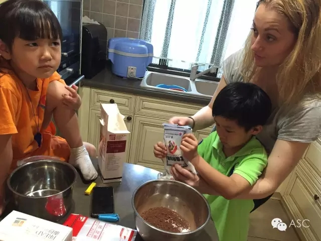

互惠动态
|
|
为什么越乖的孩子，长大后越痛苦？
在很多孩子的成长过程中，家长们会有意无意的用“乖”来衡量一个孩子的好坏。在学校“孩子平时听话吗？”是家长最关心的问题之一。

家长们都希望孩子能够听自己的话，按照自己的意愿过一生。那些乖乖听话，循规蹈矩的孩子总是会被家人、老师赞扬有加。而淘气、叛逆、反抗的孩子总是会被处罚、批评。
有一位叫“毛豆妈”的孩子母亲，分享了自己对于“乖”孩子的心得感悟：

“乖”意味着讨好大人
我很清楚地记得，我小的时候，奶奶带我出去玩。路过路边的糖果摊，奶奶指着说：“想要吗？”我摇摇头说，“不想要。”奶奶满意了，说：“这孩子最乖，从来不乱要东西。”
我还是经常看到长辈对孩子说：“你再淘气我就不喜欢你了。”或是“再这样做我就不爱你了。”孩子眨巴着眼睛，马上安静下来，以证明奶奶还爱着自己。每次看到我都心里一酸，仿佛看到幼年的自己。
为了博得看护人的喜爱，情愿压抑自己真实的天性，这种伪装起来的“乖”孩子，有什么用呢？我们所生活的时代已经不同了，这样的要挟，还不停在我们的教育生活中上演。
曾经有一位妈妈留言：我的孩子平时很乖，入幼儿园时非常顺利，不哭不闹，但是一两周后却出现了爱打人、半夜哭醒的问题。为什么？
换句话说，她在压抑自己真实的内心想法。可是，孩子的感受只能通过其他的方式宣泄出来。她上幼儿园以后爱打人、半夜哭醒，都是内心的宣泄。
孩子能够在你面前哭，说明他对你有足够的安全感，知道你会对他的情绪照单全收，全盘接纳。这种无条件的爱和养育，才是孩子健康人格形成的基础。
越“乖”的孩子
为什么小时候“乖”的孩子可能学业出色，然而在人生取得更大成就的却是那些小时候调皮捣蛋的孩子？因为，越“乖”的孩子依附性越强，自主性越差。
我会支持毛豆的决定并提醒他为自己的决定负责，而不是“你就做一个乖孩子，按照我给你指点的人生活下去。”
越“乖”的孩子
我们大学毕业的时候，父母期望我们“考公务员，拿铁饭碗”或者“进石油天然气等垄断行业”。
“乖”
不是个褒义词
在这个急速变化的时代，“乖”真不是个褒义词。
最本质的一点：这个时代是“后喻时代”：时代更新太快，很多事情，是前辈要不断向后辈学习，而不仅仅只是单纯的听父辈的话。只可惜，能认清自己视野局限的父辈并不多，大多数还认为下一代应该“乖”一点，走一条稳稳妥妥的路——越稳妥的职业，越以牺牲创新能力为代价。
这个年代都是人往高出走，哪有铁饭碗？待别人都功成名就的时候，那些听父辈指路的“乖”孩子，才发现在而立之年需要重新改变职业航向，再一次痛苦地适应社会。
我笑了。这车堆叠得算不上巧，毛豆也绝对不乖，可这辆看起来丑陋的小车，在这个创新以指数级变化的时代，一定能通往我们这一代人无法理解的未来。
亲爱的小孩，从现在起，你可以做生气的小孩、真实的小孩、走自己路的小孩。

关于互惠，您了解得够多么？
请外国学生来家庭照顾孩子，辅导孩子外语？
只了解这些是不够的！
获取更多信息请参考以下方式：
联系ASC：
电话：86-21-61116069(上海中心）
86-25-66065662（南京中心）
全国家庭均可申请！
手机：15601666586（可加微信）
Q Q：3259637585
微信：asc-center
邮箱：info@asc-center.com
网站：www.asc-aupair.com

感谢您对我们的关注